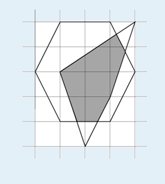

逆时针给出n个凸多边形的顶点坐标，求它们交的面积。例如n=2时，两个凸多边形如下图：

则相交部分的面积为5.233。
| F.A.Qs | Home | Discuss | ProblemSet | Status | Ranklist | Contest | 入门OJ | ModifyUser Xeonacid | Logout | 捐赠本站 |
|---|
则相交部分的面积为5.233。
第一行有一个整数n，表示凸多边形的个数，以下依次描述各个多边形。第i个多边形的第一行包含一个整数mi，表示多边形的边数，以下mi行每行两个整数，逆时针给出各个顶点的坐标。
输出文件仅包含一个实数，表示相交部分的面积，保留三位小数。
100%的数据满足：2<=n<=10，3<=mi<=50，每维坐标为[-1000,1000]内的整数